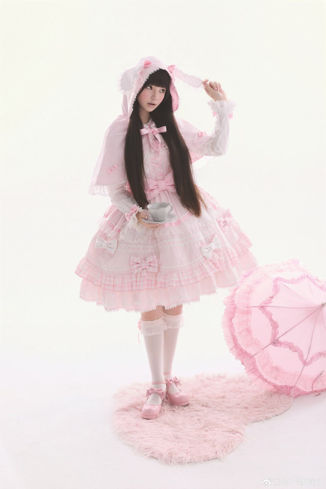
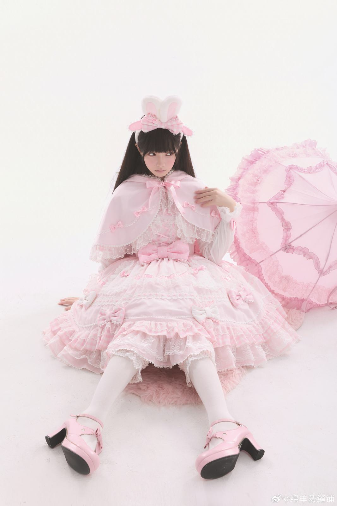
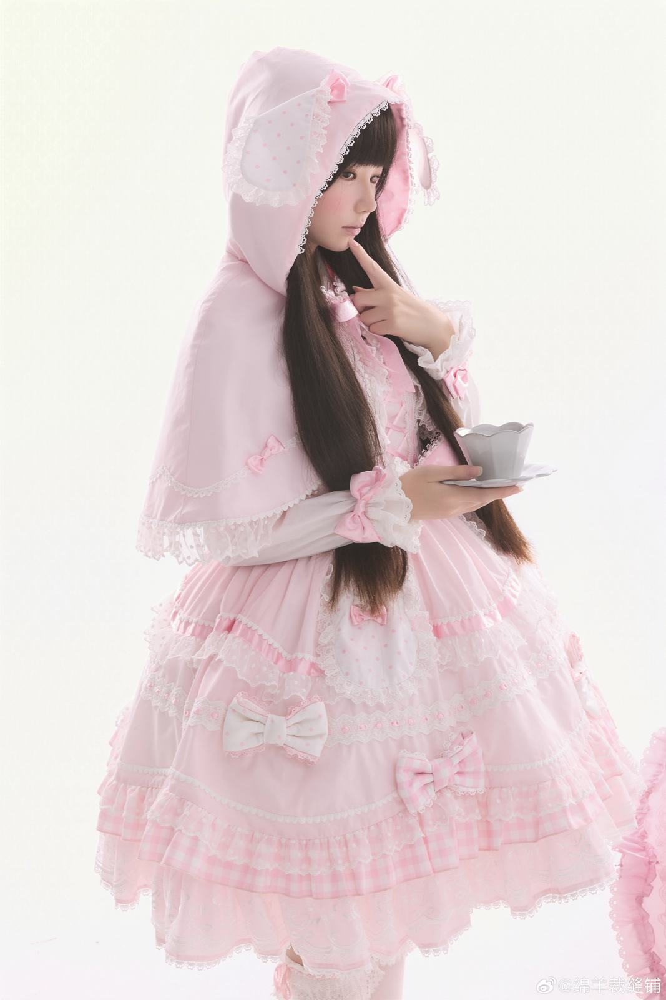
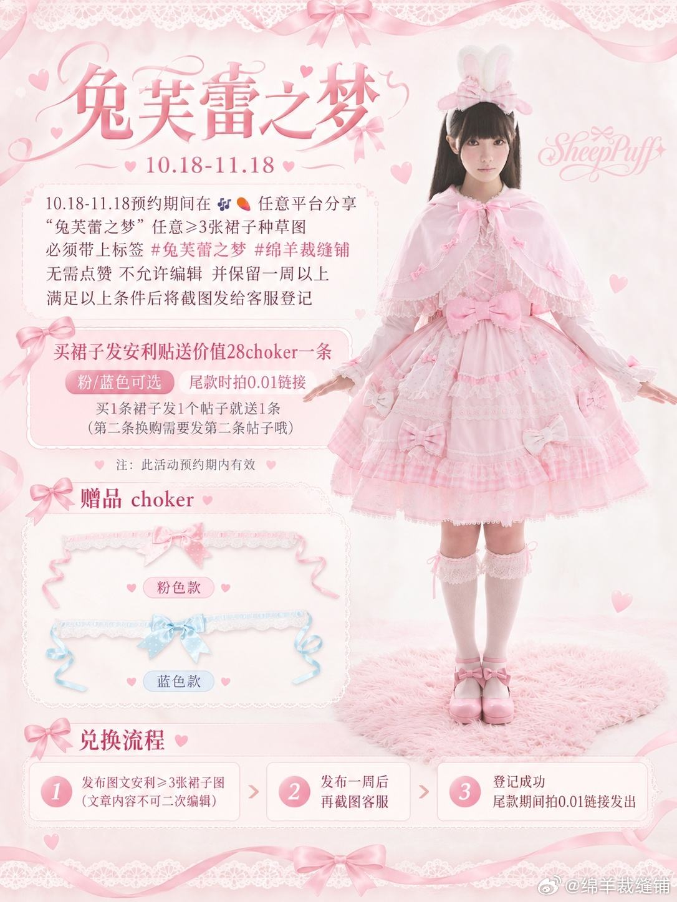

推广或笼统评价／实购与版本未知
双色测评正文只有穿搭标签；5条可见评论中有一条称里衬纯棉、外层混纺且不易皱。没有可核洗标、比例、净围或订单，视频未看，不升级为官方材质或抗皱结论。
查看对应来源 ↗品牌粉色展示JSK；兔耳斗篷、波板糖衬衫及接袖分列，蓝色视频未看
有源观察款 · 当前SKU待核

将已存斗篷笔记完成归档：品牌图/活动图与互藏评论另列，不当独立实穿或差价依据；本轮定向公开检索仍未补出可对版厘米表。
“有记录”表示取得对应资料，不等于原店现行批次或实物已全部确认；日期：2026-10-30。
| 核查项 | 状态 | 结果与适用范围 |
|---|---|---|
| 款式与版本 | 有记录 | 品牌具名兔芙蕾之梦与粉色JSK展示可读；斗篷/衬衫另列，蓝色视频未看。RS1 ↗ RS2 ↗ |
| 商品与店铺入口 | 部分有据 | 品牌正文指向绵羊裁缝铺，未取得同款商品ID和选定SKU。RS1 ↗ |
| 价格与包含物 | 部分有据 | 第三方历史JSK378，斗篷/衬衫/接袖分列；官方SKU及斗篷差价规格待核。RS3 ↗ |
| 面料与里料 | 部分有据 | 仅品牌丝带/蕾丝描述及评论混纺/纯棉说法，缺比例、洗标与批次核对。RS2 ↗ XR1 ↗ |
| 厘米尺码 | 未找到可核资料 | 未取得同版厘米表；预览S人台偏紧不能换作人体尺码推荐。RS2 ↗ XR1 ↗ |
| 销售与交期 | 部分有据 | 品牌历史10/18 13时开定，活动图列至11/18；当前接单、库存和实发日期未核。RS1 ↗ XR2 ↗ |
| 穿着反馈 | 部分有据 | 补“不集赞”标题的品牌图/活动与互藏评论，未取得独立实穿条件；不凭标题判独立性。XR1 ↗ XR2 ↗ XR3 ↗ |
对应资料 · RS1 ↗ 核读：2026-10-28
品牌历史开定展示；其中一张为安利换颈饰活动图，不是买家评价或当前可领取承诺。


上新汇总号10月21日历史文案列JSK378元、衬衫158元、接袖58元、斗篷118/138元；斗篷差价规格未说明。分售参考，不相加为官方套装或当前实付。
双色测评正文只有穿搭标签；5条可见评论中有一条称里衬纯棉、外层混纺且不易皱。没有可核洗标、比例、净围或订单，视频未看，不升级为官方材质或抗皱结论。
查看对应来源 ↗宣传账号明示点赞、正向评论及关注抽鞋活动，评论也讨论安利保留一周。与裁缝铺主体关系未核，不当作独立实穿或品牌成交热度。
查看对应来源 ↗标题说不集赞，但5张静态图主要为品牌展示及安利赠颈饰规则，可见评论有互藏互动；不由标题认定独立性。没有斗篷实穿、尺码表或118/138差价规格说明。
查看对应来源 ↗正文与可见评论已读；未观看的视频不写成视频结论。版本、配色、体型、渠道和推广关系未全部统一。
按当前材料保留缺口；“未找到”不表示信息或款式不存在，取得新资料后再更新。
兔耳斗篷和接袖能否增加搭配跨度，同时保证抬手、背包和温度调节？比较单JSK与完整搭配成本时应分别列斗篷、衬衫、接袖和活动权益，先核材质与尺寸再谈季节适用。
这是后续验证问题，不代表已确定的产品定位、定价或质量结论。